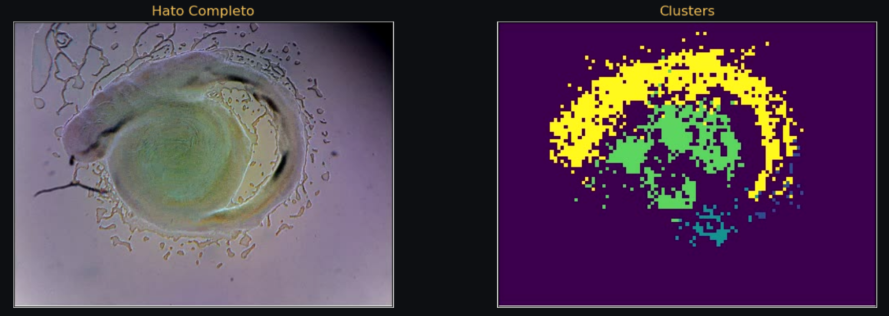

Ancient datagram
Biotexturas lab
Drone Activate. Ancient datagram composed using an optical flow and a cluster analysis computer vision pipeline applied to a time lapse captured by TerraScope. In the datagram, we can see the robotic shifting of TerraScope’s XY stage while the computer vision machine is tracking an emitted ArrowHead and snakes morphs of P. lautus.

TerraPi | Raspberry Pi | serial 00000000ba807092
TerraScope v1.0 - raspistill 1920x1080
same device (TerraPi, serial 00000000ba807092) - steward-confirmed
this capture predates Fuji - the Fuji registration below is the same Pi's later on-chain registration, not of this capture
device 0xAf2f889073Fa571Fd13526A7adB105560B0B40f5 (Avalanche Fuji, chain 43113) - later registration
serial hash 0x3f28f696...4b6f
THE ANCIENT DATAGRAM
This capture is the Ancient Datagram - minted as the founding datagram, and preserved in lifelong decentralized storage.
Capture hash (SHA-256, locked): 59022e0c72476839737e37c29f98a6cb4ff131d106ce1a9fcd7c6ad765e7fd80 - over hatoclusters.avi as-is, 14,486,308 bytes.
Mint status: minted - signature 64w4abEpX1i7oSnkXsNcqCBfeJFnFQSaErs7M8XXMyULQc7FshjYQhMWixUkynUgxePBDxvWjBG9ePw8P5UbEwiZ (devnet, slot 507391878, 2026-10-04 14:16:38 UTC, instruction MintFoundingDatagram, finalized) - view on explorer.
DEVICE
Capture device: TerraPi (Raspberry Pi, hw_serial 00000000ba807092), TerraScope v1.0 - raspistill 1920x1080 quality 90; signed capture timestamp 2026-03-21T19:43:37Z. OS: version unspecified (pending) - possibly a different Linux version than the current build, per the steward.
This capture predates Fuji - nothing about the capture or video origin is Fuji-specific. Registered device: 0xAf2f889073Fa571Fd13526A7adB105560B0B40f5 on Avalanche Fuji (chain 43113, contract 0xF7497fC600Bd4877A0Ad3C0B3BBBEE80b9038477) - the same physical Pi's later on-chain registration, unrelated to the capture era; serial hash 0x3f28f696...4b6f (documented as keccak256 of the hardware serial per contract natspec - not re-derived here); attester 0xba9C2f6Edf0C9968F0b3af39a7B52A8Ea03c06e5.
Same device (TerraPi, serial 00000000ba807092) produced this capture and hatoclusters - steward-confirmed in-thread (2026-10-04 19:23 UTC); nothing in the TerraGenesis repos names hatoclusters, so it is stated by the steward, not verified on-chain. Steward's words: "All the same hardware than the Susana and Pablo's data."
Notes: the committed demo capture was signed by a different key than the registered Fuji address (the registered one prints above); the capture metadata's camera_info field is the Pi's codec entry, not the camera sensor model - sensor model pending, not fabricated.
SAME SCALE - ONTOLOGY NEIGHBORHOOD
SMALLER SCALE - COMPOSED BY
Biotexturas lab
LARGER SCALE - COMPOSES INTO
the deck is a card representation of these pages as well as their entry point on our deck on knowledge
Here we build the lab knowledge culture
not only is connected to kEngrams on the same scale (on the ontology) but they are composed by nodes at other scales
For MVP we click collected there. Later with conditions there. Still only one collec needed to unlock Tools.
one collect anywhere unlocks SELECT - RADIATE - RE-PICK - TRACKER in the ALife Ecology